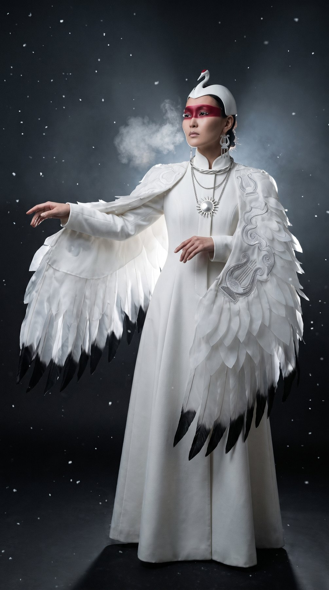
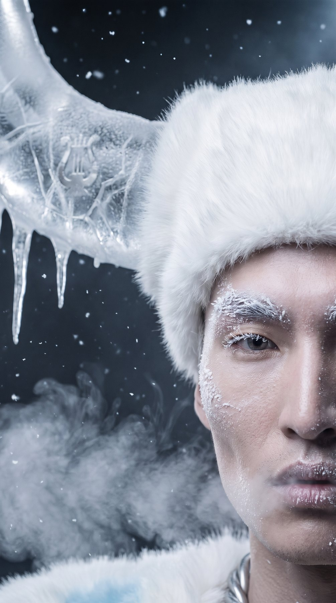
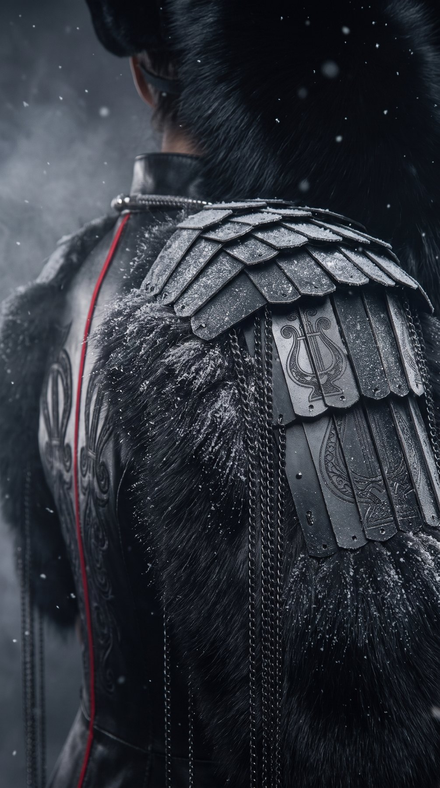

Film 2026
SAQA: The Spirits of the Three Worlds
Where Sakha mythology meets couture
Overview
Sakha mythology, reimagined as haute couture.
SAQA is an AI fashion film about the mythology of the Sakha (Yakut) people of Siberia, where I’m from. In Sakha cosmology the universe has three worlds. The film moves through them, from the white and silver of the Upper World to the ice and black of the Lower World.
The character names are written in the Novgorodov alphabet, the first Sakha script (1917). It had no capital letters, and “saqa” is how “Sakha” was written in it.



Research
Every look starts from a real piece of Sakha dress.
I researched traditional Sakha costume across about 60 sources, then translated each element into couture.
| Element | What it is | How I used it |
|---|---|---|
| Son | Flared fur coat or kaftan with puffed shoulders and back pleats | The base silhouette for every look |
| Taŋalai | Archaic kaftan with short fur sleeves | Kyys Nyurgun’s sable “wing” sleeves |
| Dyabaka | Tall fur hat with a red crown and a silver sun | Aiyy (cropped) and Abaasy (black) |
| Ilin / kelin kebiher | Silver ornaments worn on the chest and back | Sculptural breastplates |
| Bastyŋa, ytarga, kyldyy | Headband with chains, tiered earrings, neck torque | Chains framing the face, earrings on every character |
| Kuyakh | Lamellar armour | Kyys Nyurgun’s armour corset |
| Keğüör oiuu | Lyre-shaped “tree of life” ornament | The main motif: embroidery, engraving, Abaasy’s shield |
| Choroon, serge | Kumis cup, hitching post | Ritual context for Aiyy |
What I avoided on purpose: Chukchi and Inuit parkas, reindeer, Buryat shamanic face fringe, gold and feathered headdresses. They often get mixed up with Sakha culture, and they aren’t ours.
Process
A prompt formula that turns ethnography into images.
| Stage | Tools |
|---|---|
| Research, prompts | Claude (deep research), ChatGPT |
| Images | Higgsfield · Nano Banana |
| Video | Higgsfield Genjutsu (motion transfer), Kling 3.0, Seedance 2.5 |
| Music | ElevenLabs Music, Instagram library track |
| Edit | CapCut, Final Cut Pro |
[shot type] + [Sakha model: cheekbones, frost, breath] + [character from the mythology] + [clothing: Sakha terms translated into visuals] + [silver & headwear] + [dark studio, rim light, snow] + [palette] + [film grain, grade] + [negative: Inuit parka, gold, reindeer…]
Example: dyabaka → “tall conical fur hat with a red broadcloth crown and an engraved silver sun disc”.
| Round | What changed | Output |
|---|---|---|
| 1 · Literal | Four looks close to tradition | 4 images |
| 2 · Couture | High-fashion rework, cropped Aiyy hat, Bull of Winter replaces the udagan | 4 images |
| 3 · New characters | Bayanai and Kytalyk added, piercings removed from the Bull | 3 images |
| 4 · Details | Two close-ups per look: face and texture | 12 images |
| 5 · Khomus | Opening shot and a fix for the grip on the mouth harp | 2 images, 2 videos |
| 6 · Animation | Kling, Seedance, Genjutsu, the wing flap | ~5 videos |
| 7 · Music | Khomus → Dune-style build → runway → crescendo | 5 prompt versions |
The edit follows a Wisdom Kaye edit set to Dune: seven cuts in 18 seconds, always detail → face → full figure.
Output
A 21-second reel and six characters.
Learnings
The first cut didn’t travel, and I know why.
The first version of the reel opened on a still frame, and people scrolled past it. A new version opens on the wing flap, so there’s movement in the first second. It isn’t published yet.